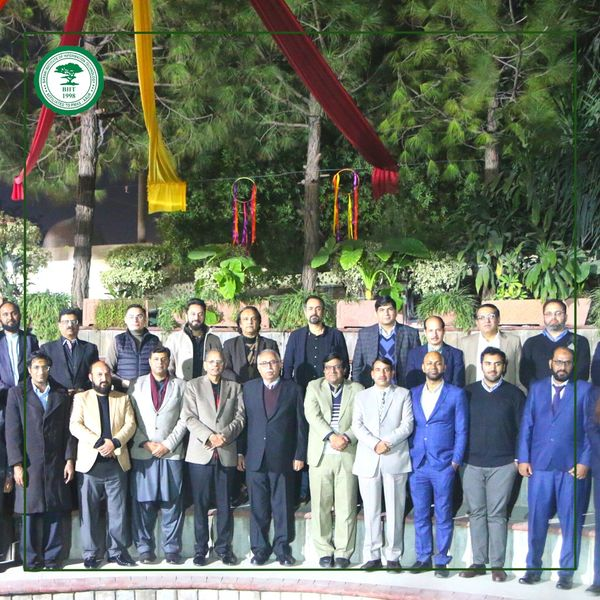
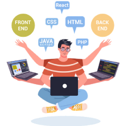
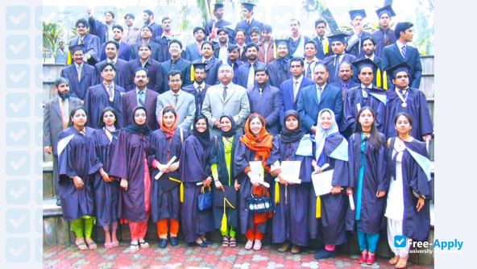
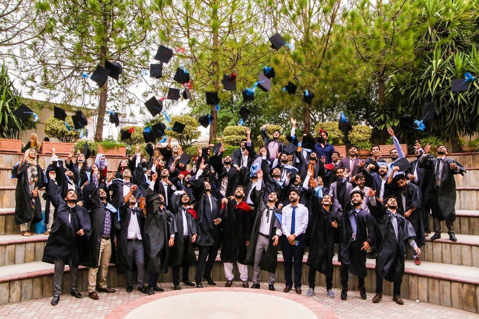
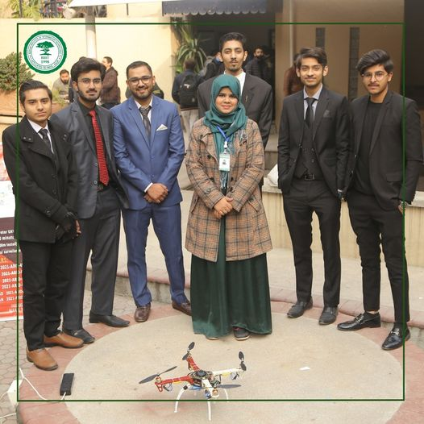
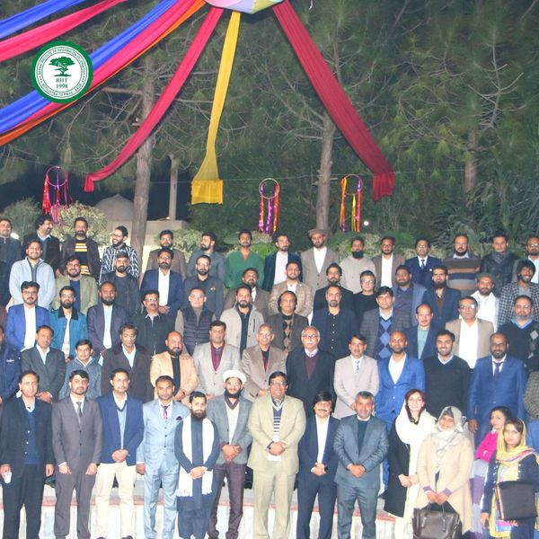
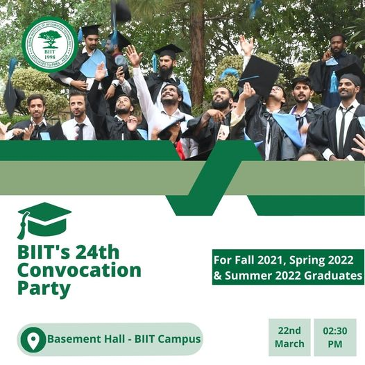
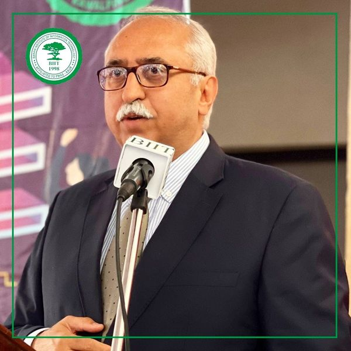
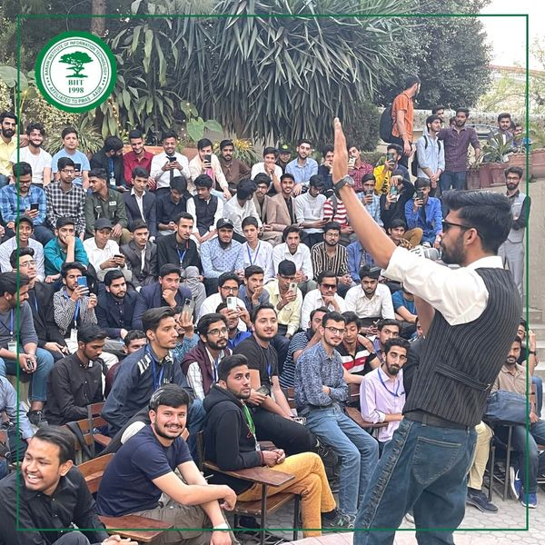

Brani Institute of Information Technology
training with education
since 1998

Welcome to the Best Computer Institute of Rawalpindi Pakistan
Barani Institute of Information Technology (BIIT) was established at University of Arid Agriculture after a long
and deliberate consideration of the growing needs of software development and the initiative launched by
Government of Pakistan. The institute was established as a partnership venture between the University of Arid
Agriculture (UAAR) and M/S Resource Organizers and Software Engineers (ROSE) International. The institute
operates on self-financed scheme, and is initially concentrating on undergraduate and graduate academic
programs.BIIT was established at University of Arid Agriculture after a long and deliberate consideration of the
growing needs of software development and the initiative launched by Government of Pakistan. The institute was
established as a partnership venture between the University of Arid Agriculture (UAAR) and M/S Resource
Organizers and Software Engineers (ROSE) International.

BIIT offer a Different course
@biit offical
|
Video Section
Some of the videos of classrooms, teaching method, student reviews and success stories to
demonstrate the environment of Biit Institute. And to show what make masia the best computer
institute in Rawalpindi Islamabad Pakistan. If you are a student of masia institute and do not find
your
video here. You can contact on @bitt/official or visit biit institute office. Complete videos
list can
be found at Youtube channel of BIIT Institute
Appreciation / Recommendation / Recognition
for BIIT Institute
Thanks for the thanks. These are some of the facts that makes us the best computer institute of
Pakistan, specially in Rawalpindi Islamabad region. Specially in the field of BSCS Laravel, Adobe
BSIT, Adobe AI, Corel Draw, Graphics Designing and Web Development. There is a large
number of
our students serving in different Government and Private sector organizations. From our
beginning in
2007, we have always strived to be the best in IT training. MASIA Institute never
compromise on
quality of education. We invite you to visit and meet our faculty.
|  |
 |
|
2020 section award cermony in BIIT Institute
|
2022 section award cermony in BIIT Institute
|
|  |
 |
|
DLD project events in BIIT
|
BIIT Staff Meating
Institute
|
|  |
 |
Biit 24th Convaction Party
for BIIT Institute
|
Director of Brani Institute
|
|  |
 |
|
Music Competation
|
Sports Gala
|
BIIT
|
Barani Institute of Information Technology (BIIT) was established at University
of Arid Agriculture after a long and deliberate consideration of the growing needs of software
development and the initiative launched by Government of Pakistan.
|